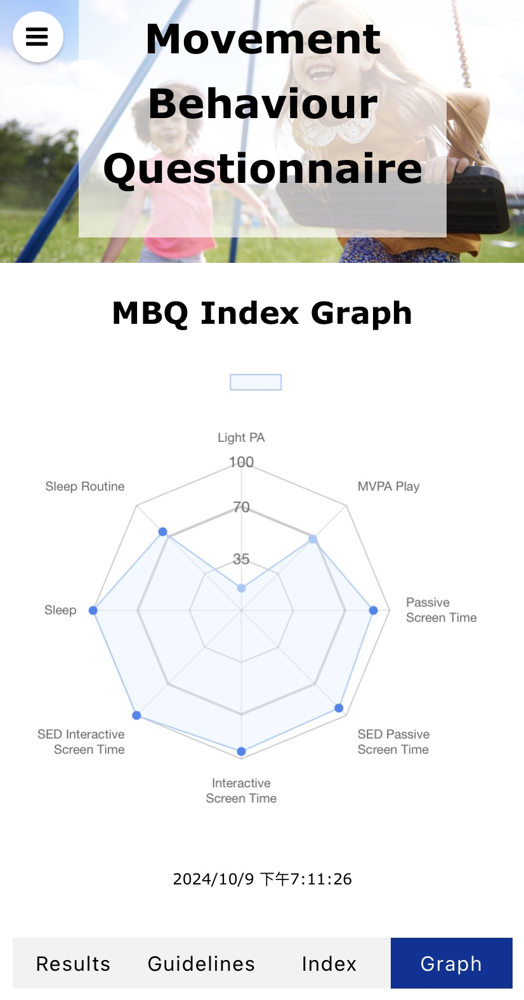
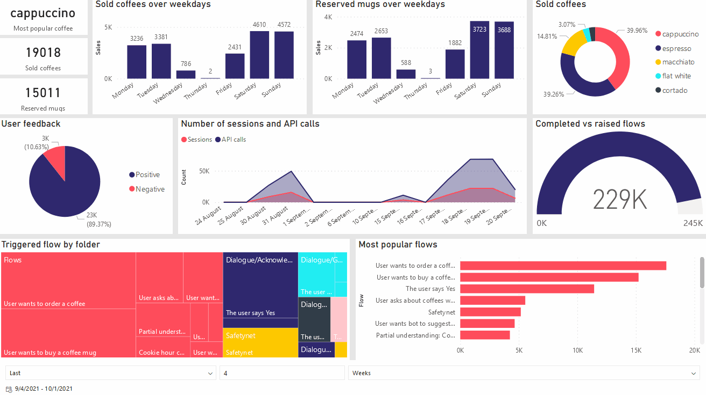

Experience

Technical Officer/Senior Research Assistant
The University of Queensland & Queensland Childrens Hospital
Brisbane, Australia | Feb 2024 – Current
- Node.js
- HTML
- CSS
- Chart.js
- Express.js
- JavaScript
- Project management
- Data Visualization
🌟Achievements
- Developed web applications for Movement Behavior Questionnaire, enhancing data visualization.
- Provided accessible data to support a clearer understanding of children's behavior and needs.

Data Analyst
Desygner
Gold Coast, Australia | Jan 2024 – Mar 2024
- MySQL
- Data Visualization
- Data governance
- PowerBI
- Data Cleaning
- Python
- Jira
- Excel
🌟Achievements
- Perform data cleansing to significantly improve the quality of the database
- Create data reports to improve business decisions
IT Support Specialist
Cultural University
Taipei, Taiwan | Dec 2017 – July 2021
- System Maintenance
- Troubleshooting
- Hardware Installation
- Technical Support
- Software Installation
🌟Achievements
- Managed university-wide computer systems and projectors, reducing breakdowns.
- Facilitated the installation and maintenance of hardware and software.
Education
The University of Queensland
Master of Computer Science (Management)
Brisbane, Australia | 2022 – 2024
🌟Thesis
- Developed parallelized passive radar systems using C/C++/CUDA on GP-GPU platforms, optimizing performance with FFT-based correlation and real-time data.
- Conducted algorithm analysis, performance evaluation, and bottleneck identification, ensuring efficient and reliable radar processing.